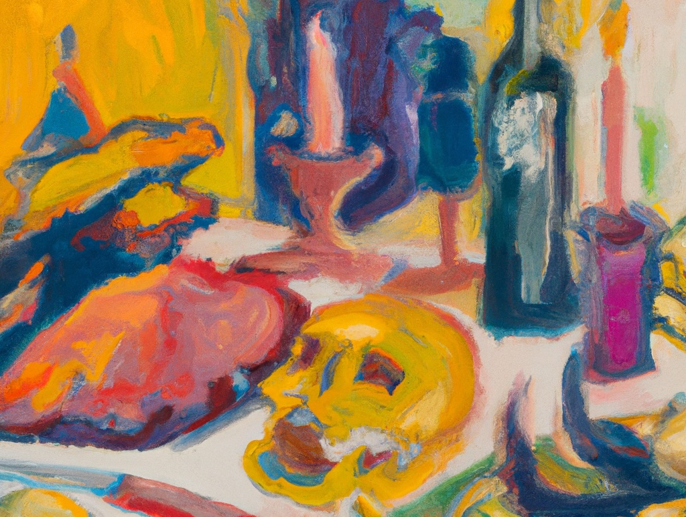

I work at the intersection of design, health, and human experience. My journey has been driven by a deep-seated drive: to transform our relationship with mortality.
I’m committed to helping us awaken to our mortality, using design as a means to not only confront but harness this inevitable process.
I want to help to us - both individually and collectively - embrace our mortality with understanding, dignity, and grace. I do that through designing, writing, talking and being with people.
Read
- Read case studies of my recent design work
- Read some of my published writing on innovation, health and psychology.
Learn
- Learn more about my new venture Mortals, an online community and group programme that is centred around awakening to life.
Watch
- Watch my talk “Design at the end” presented at IxDA
- Listen to my conversaton with writer and teacher, Stephen Jenkinson
Get in touch
- Hire me and lets work together
- Set up a free consultation for end-of-life support